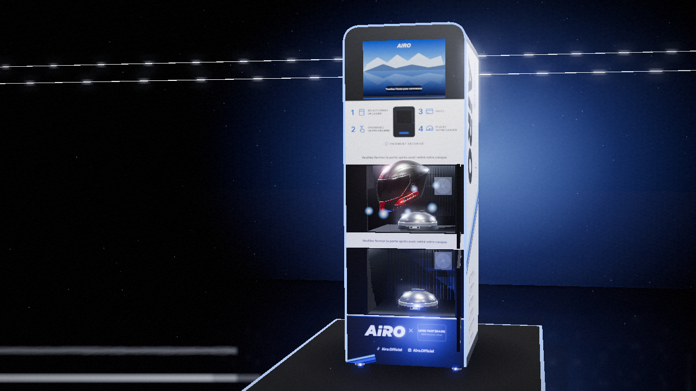
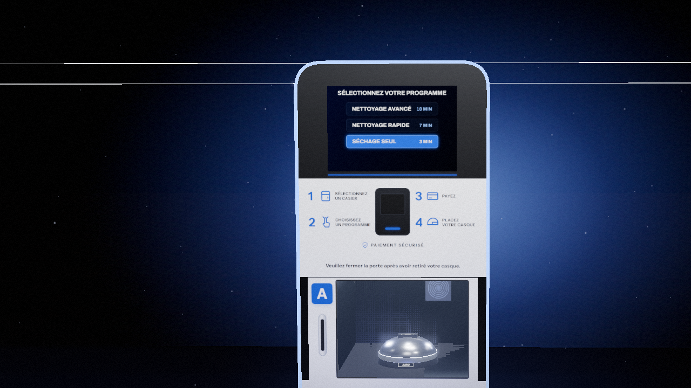
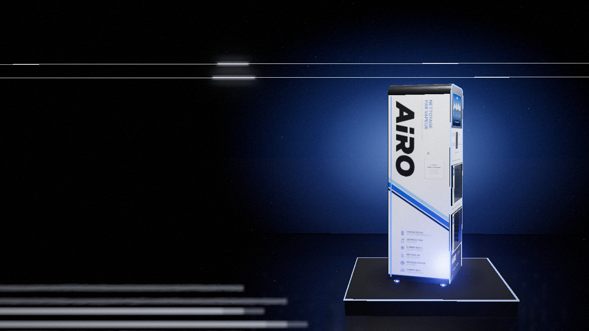
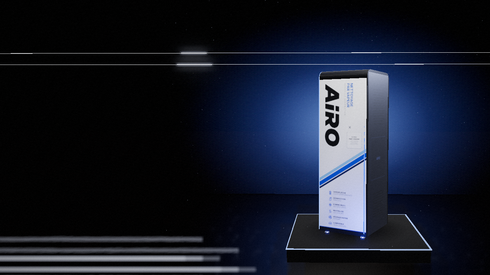
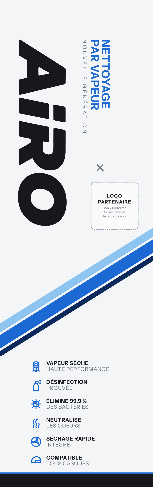
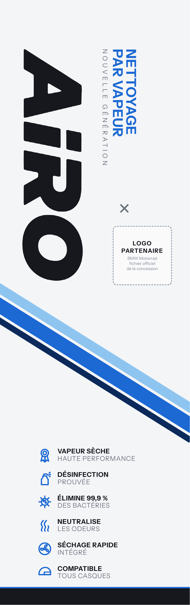
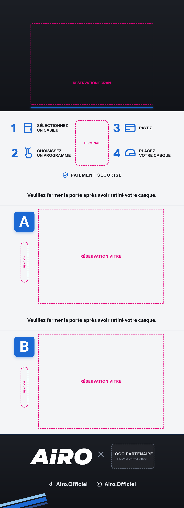

Proposition de covering · V1
Un habillage blanc satiné, des lignes bleues qui montent vers l’arrière : la borne AIRO dans l’esprit des machines BMW Motorrad.
AIRO, MarseilleDocument de travail · non contractuel
01 · Aperçu 3D



AIRO × BMW Motorrad2
02 · Panneaux à plat



* Cotes du modèle 3D, à confirmer sur le gabarit de l’imprimeur · pointillés magenta : réservations (écran, terminal, vitres, poignées)3
03 · Système graphique
Blanc satiné#F4F5F7
fond
Bleu ciel#8EC5F0
bande 1
Bleu#1C69D4
bande 2 · accents
Bleu nuit#0B2A5B
bande 3
Anthracite#16181D
textes · socle
Valeurs écran (sRGB). Les équivalents CMJN ou Pantone sont à caler par l’imprimeur sur épreuve, en particulier le bleu, à aligner sur la charte de la concession.
Instrument Sans
Grotesque nette, licence libre (OFL) · textes, étapes, pictos
Logo AIRO vectorisé depuis la maquette existante. À remplacer par le fichier source du logo s’il existe.
AIRO × BMW Motorrad4
04 · Avant impression
Le logo BMW et toute mention de la marque nécessitent l’accord de BMW, via la concession partenaire. Elle fournit le logo officiel et les règles d’usage. L’emplacement est réservé, rien n’est redessiné.
Création originale inspirée de l’univers motorsport. Les bandes M tricolores sont une marque déposée de BMW : elles ne sont utilisées que si BMW les autorise.
Les dimensions viennent du modèle 3D. Mesurer la borne ou demander le gabarit de découpe à l’imprimeur avant production, avec 5 mm de fond perdu.
Conseil courant pour ce type de mobilier : vinyle coulé blanc, lamination satinée anti-UV, découpe autour de l’écran, des vitres, du terminal et des poignées.
La maquette actuelle porte « Airo.Offciel ». Cette version écrit « Airo.Officiel », comme le compte.
Panneaux vectoriels à l’échelle 1:1 (PDF) et textures de l’aperçu 3D fournis. Le fichier d’impression définitif est préparé par l’imprimeur.
AIRO, Marseille · airo.casque@gmail.com · 06 68 73 12 075